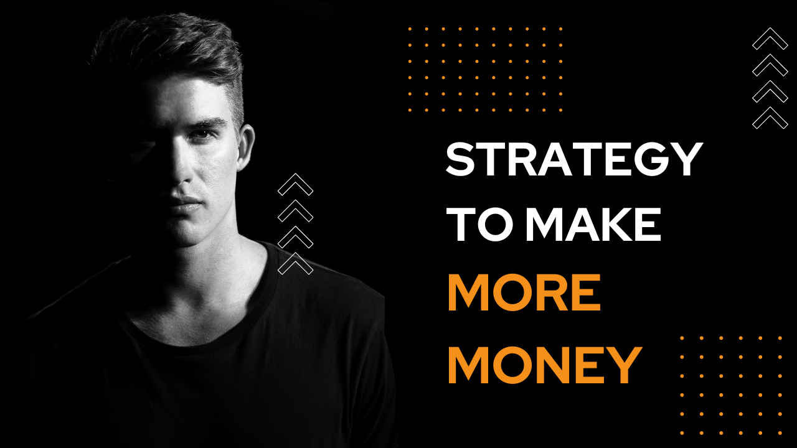
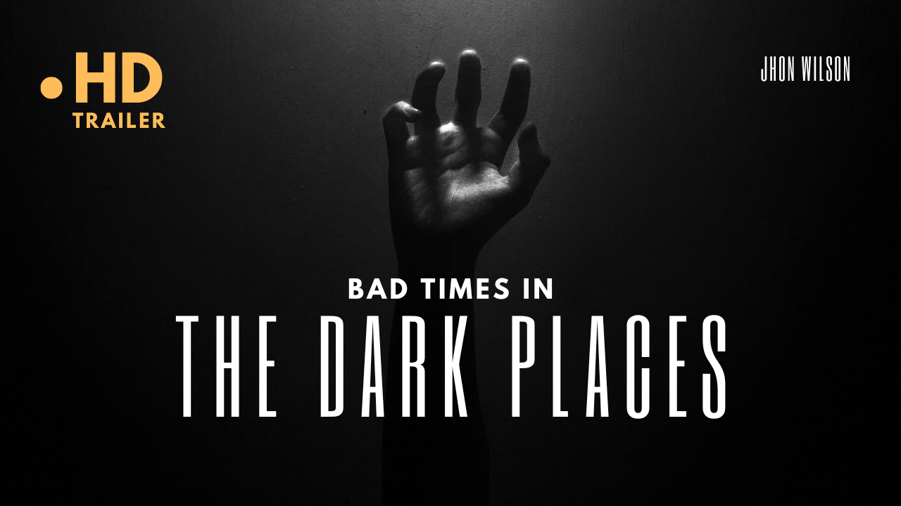
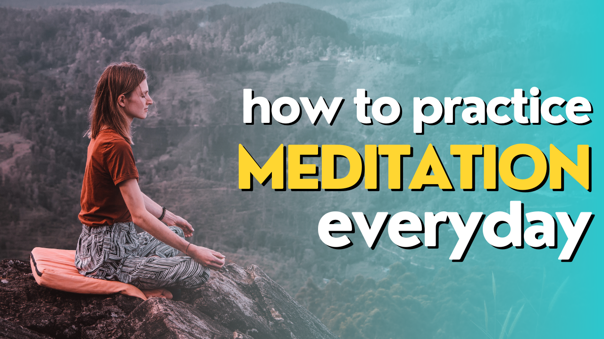
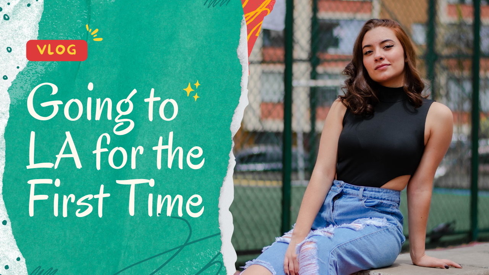
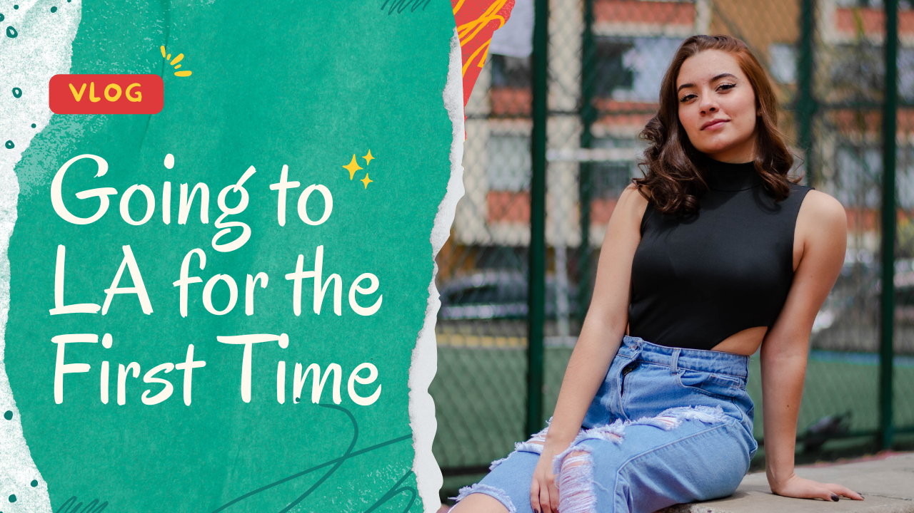
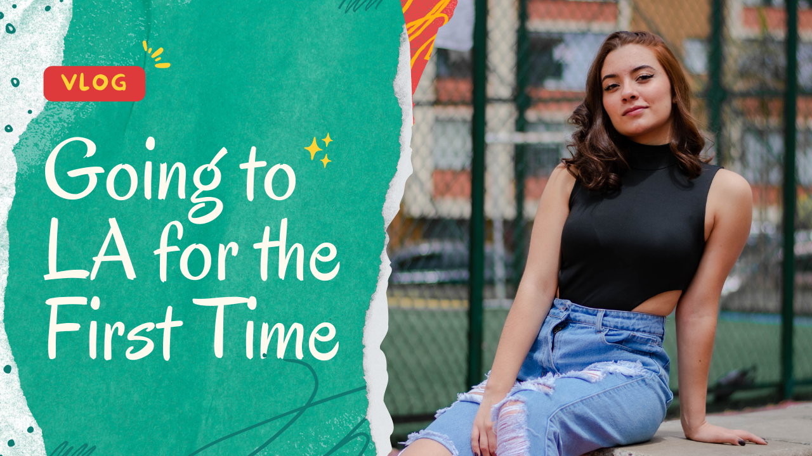
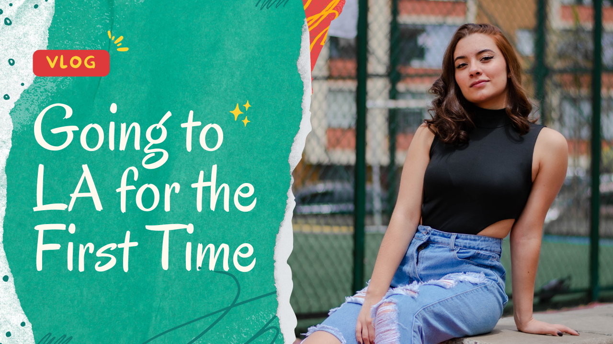

Take a look at my thumbnail design portfolio:



 



As a graphics designer, I have honed my skills to create stunning visual designs that communicate complex ideas and concepts to a wide range of audiences. With years of experience in the field, I am proficient in using a variety of design tools and software, such as Adobe Photoshop, Illustrator, and InDesign, to create striking visuals that capture the essence of the brand and the message it seeks to convey.
My design approach is focused on understanding the unique needs and requirements of each project, and working collaboratively with clients to develop customized design solutions that meet their goals and objectives. I pride myself on my attention to detail and my ability to create designs that are both aesthetically pleasing and functional.
Throughout my career, I have worked on a wide range of projects, including branding and identity design, web and digital design, print design, and packaging design. I am comfortable working across a variety of mediums, and I am constantly exploring new design trends and techniques to ensure that my work is always fresh and innovative.
As a professional graphics designer, I am committed to delivering high-quality work that meets the highest standards of excellence. Whether working with a small start-up or a large multinational corporation, I bring the same level of passion and dedication to every project, and strive to exceed my clients' expectations at every turn.
Email: adakrounak7@gmail.com
Address: Kolkata,West Bengal